- Greatest flexibility for shared & localized variables
- Scale cleanly as more Theme Sets are added
- Most complex to onborad
- 2 places to check when debugging a style value
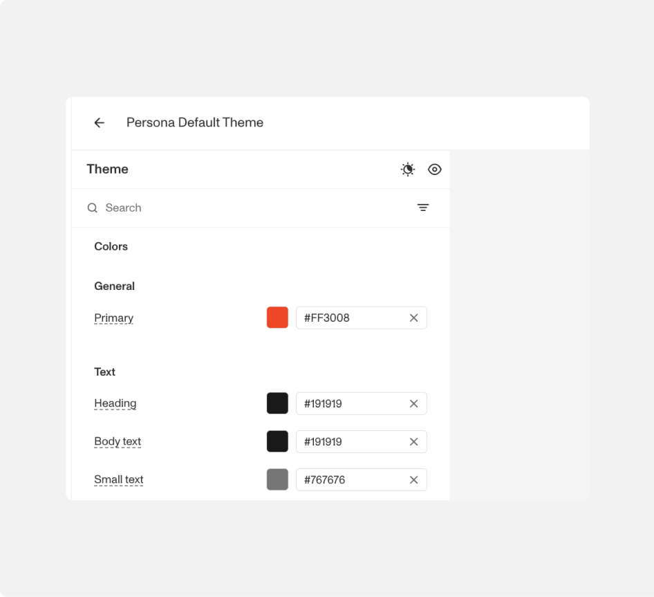
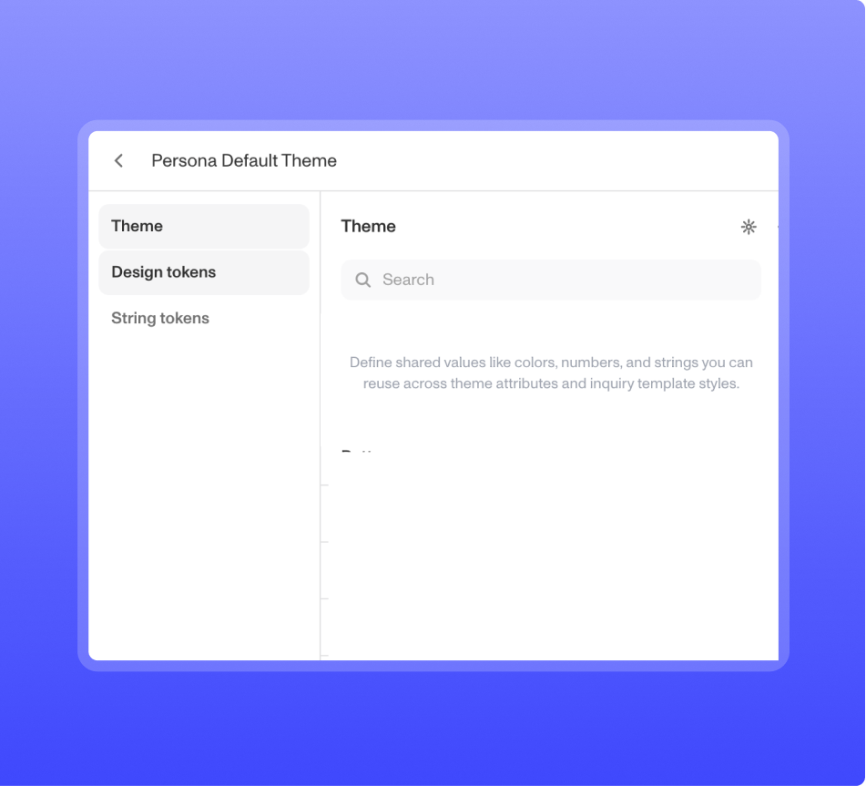
Overview
What is Persona?
Persona helps businesses create identity verification experiences for their users
Theme Sets is where builders can customize bespoke flows!
Within Flow Editor, Theme Sets acts like brand kits that make these flows feel like a part of the business’ own products
The Problem
Keeping many brands consistent meant the builder’s updating the same values over and over, by hand
For our customer Twilio, the color #0263E0 was repeated in
- 425x primary.color
- 441x primary.button
- 30 Theme Sets
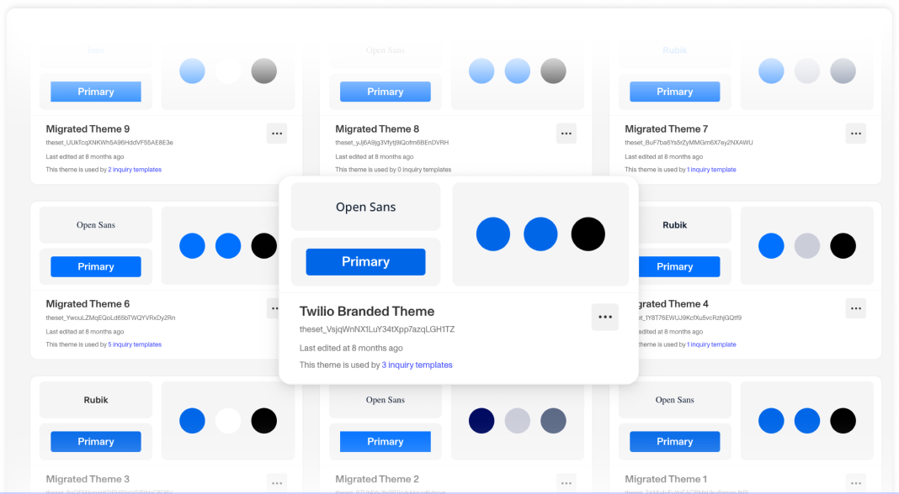
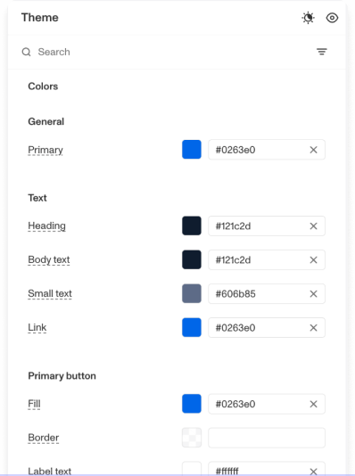
“We have multiple different sub-businesses, each with different colors, fonts, etc. They want to have specific custom assets store on the theme set, which would each be assigned a screen within the flow, and would be dynamically replaced at inquiry level”
How might we
Help builders define a value once and reuse it across Persona?
An uniquely position project
A brand configuration and scaling layer for the entire platform
-
Reduce maintenance overhead
Update shared values once instead of manually editing every template
-
Enable multi-brand scale
Support parent & child businesses with independent branding on shared infrastructure.
-
Preserve consistency & reliability
Keeps themes compatible while allowing each brand to maintain its own values.
The initial proposal
Resources: A new layer for reusable values
During scoping, the PM and I saw a need a central location in the Dashboard to define and manage these resources, with the ability to update them via API.
...but it fell apart
During scoping, the PM and I saw a need a central location in the Dashboard to define and manage these resources, with the ability to update them via API.
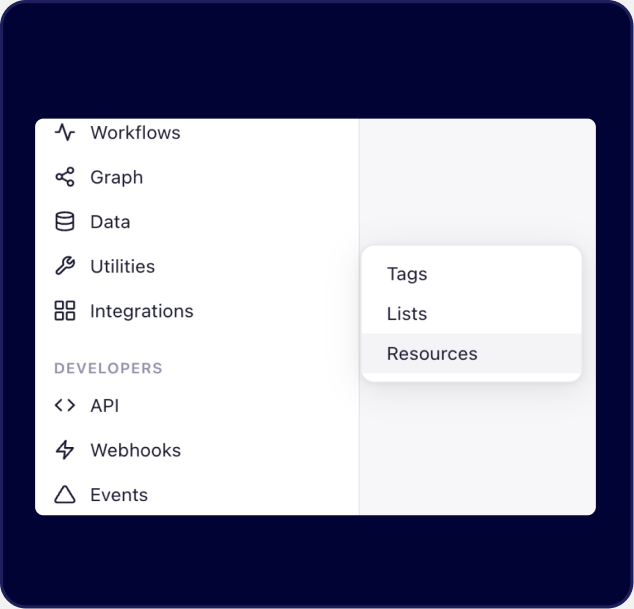
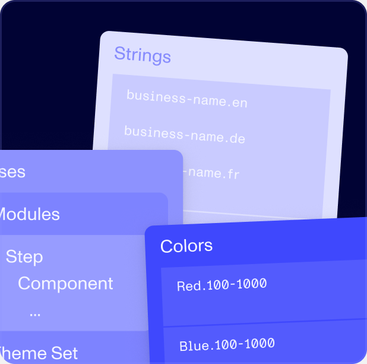
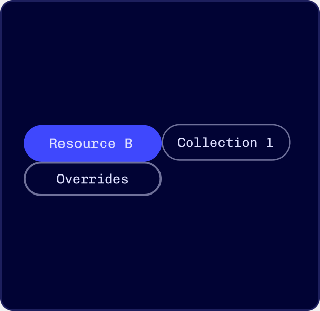
A redirection
Design variables sit within Theme Sets
Resource Sets and Theme Sets were the same shape. Instead of building a parallel system, we expanded Theme Sets to cover the full inquiry experience.
Considerations
Information Architecture
Where does variables live?
After dozens of diagrams and mental models, we narrowed it to three options and chose scoped: it serves B2B2C directly and is the easiest for builders to learn.
- Global consistency without extra maintenance
- Can’t build reusable, specific B2B2C variables
- Bloating, as there’s no scoped tokens to absorb one-off needs
- Simplest mental model
- Serves core B2B2C use case
- Values across Theme Sets can’t be managed centrally
Swappability
What happens when Theme Sets have different variables?
Add a variable to one theme, every theme gets the key. Themes can have completely different visual values, but they will never have different structural shapes, ensuring seamless runtime handoffs.
Scalability
What does it look like when Theme Sets grow larger through time?
A new token is added to every Theme Set at once, so creating one had to be fast and still safe across every brand
Iterations
Microinteractions & user journeys
Search functionality
Smart inputs let builders enter a value or reference a resource in one field given the multi-dimensionality of Theme Sets.
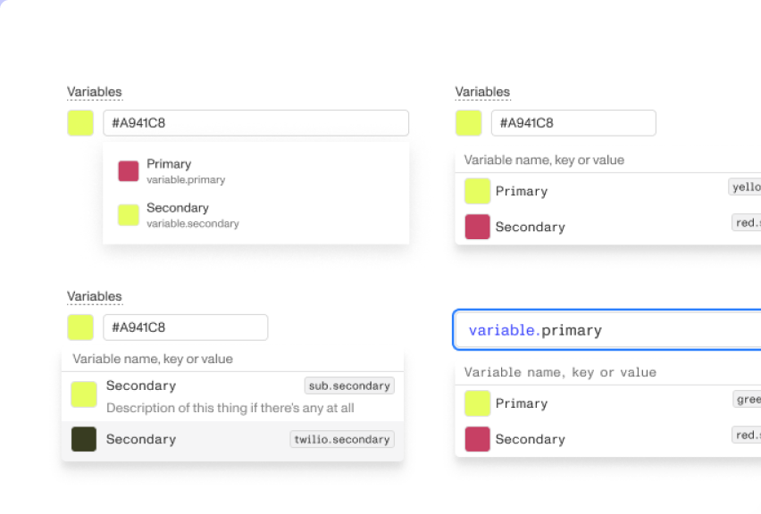
Order of operations
The goal is to account for every touchpoint in the customer’s journey as they create, save and publish variables
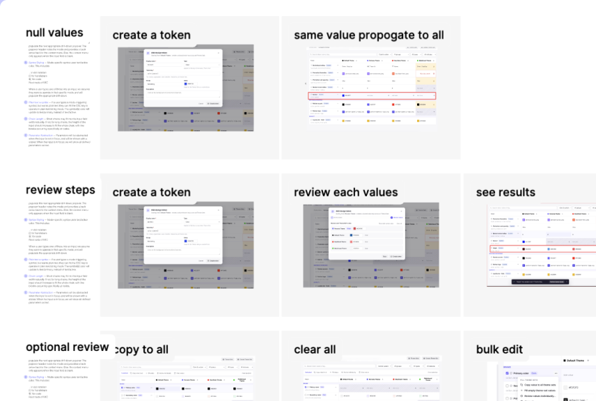
The Final Solutions
Previously, builders typed the same hex values into every theme by hand, so one brand color lived in hundreds of places.
My design let builders create typed tokens inside a Theme Set, so each value is defined once and referenced everywhere.
1
Create and configure design variables
In Theme Set Editor
Apply a variable
Swap a raw value for a variable in one click
Edit custom variables
See & edit variables in the left hand side menu, among other granular controls
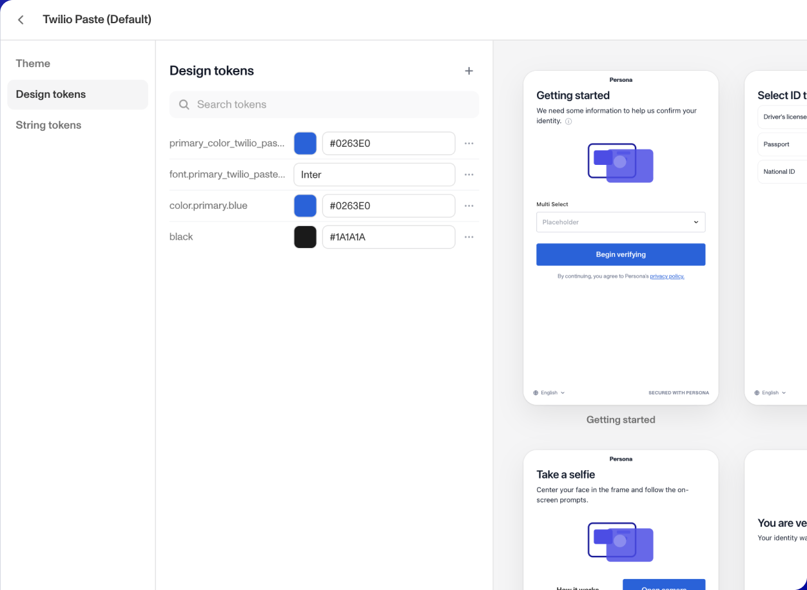
2
Apply variables anywhere while building an Inquiry Flow
In Flow Editor
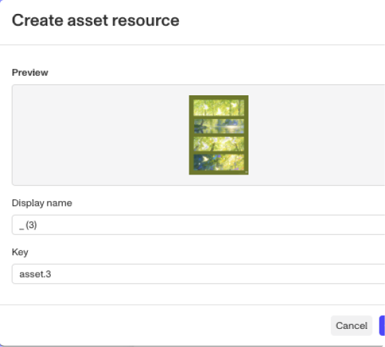
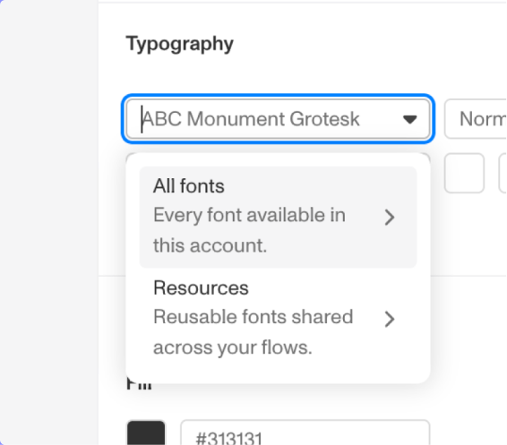
3
Compare and manage variables cross-themes
In Variable Management
Inspired by the industry standard of design systems, I also proposed a separate view that supports a more advanced job for our power users: auditing several brands side by side, reviewing copied values, spotting raw overrides, or performing bulk edits.
Before
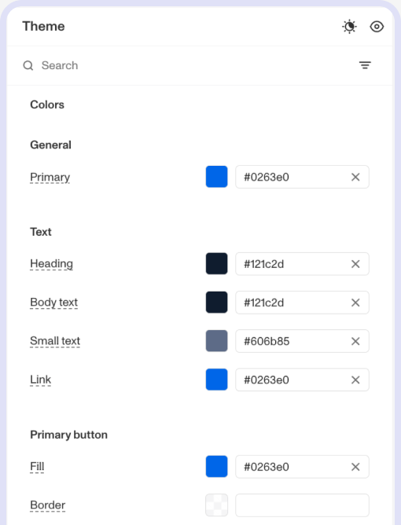
- Builders could only see one theme at a time
- Checking a value across brands meant opening every theme
- Missing/mismatched values were easy to miss
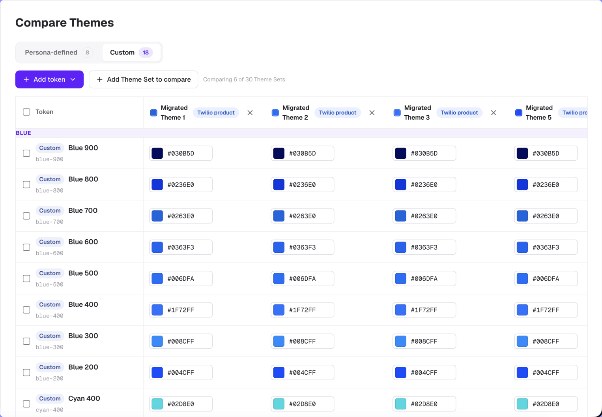
On impact
Built for a thousand brands
Design tokens are the foundation every brand on Persona will be built on, deciding how the world’s largest platforms keep their brands true across everything they ship.
-
Metrics
Reduce 30% of time to set up a new sub-business.
1283 color edits become just 1. -
Research
Shaped with research from Twilio, DoorDash, Meta. Projected to reach 3000+ customers
-
Next steps
Allowing any organizations to import in variables using their current setup in code, and create a freeform experience!
What I learned?
-
Diagrams and prototypes are not only communication artifacts
They exposed trade-offs, and each discarded model informed the next.
-
It’s never a simple interface problem
Changes to the relationship between Resources, Theme Sets, tokens, and variants change what the design needed to be
-
Prototyping with Cursor & choosing the right fidelity
When to keep building in Cursor and when to step back into lower-fidelity explorations